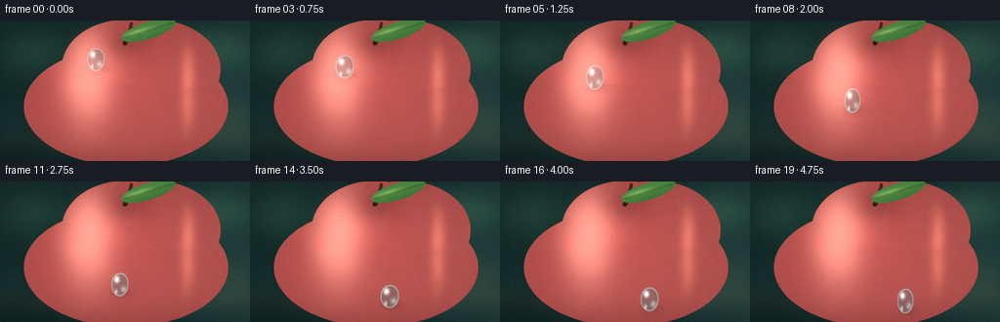
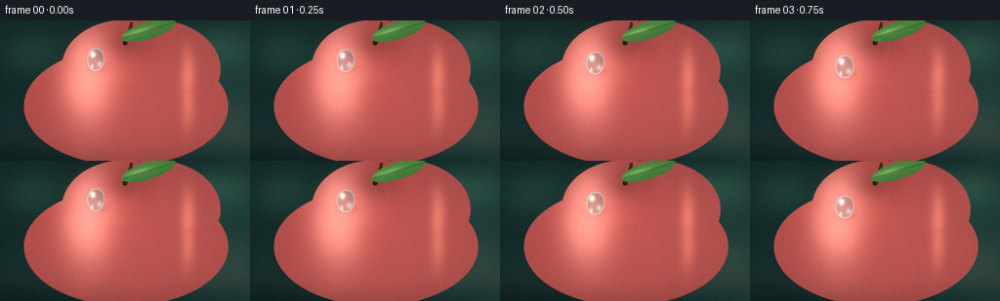
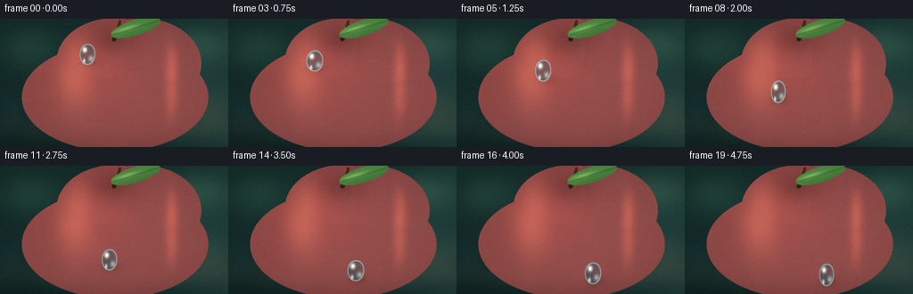
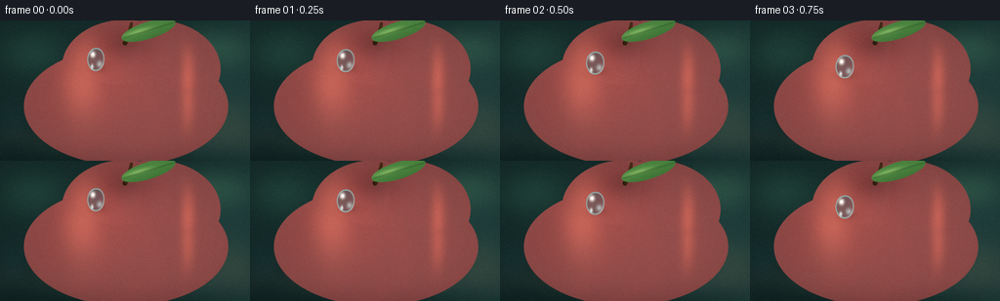

CODING AGENTS AS PIXEL WORLD MODELS
traex/DeepSeek-V4.1-Flash · phygen_038
点击播放 · 原生 RGB 像素
逐轮保存的候选
回放视频、检查图与代码变化。
每份候选均可单独播放。实际图片检查记录在下方工具轨迹中。
候选 01播放与检查图
点击播放 · 原生 RGB 像素

展开代码变化
--- 上一保存版本
+++ 本次保存版本
@@ -0,0 +1,355 @@
+from __future__ import annotations
+
+import math
+from pathlib import Path
+
+import numpy as np
+from PIL import Image, ImageFilter
+from scipy.ndimage import gaussian_filter, map_coordinates
+
+import artifact_io
+
+
+CASE_DIR = Path(__file__).resolve().parent
+WIDTH, HEIGHT = 256, 144
+FRAMES, FPS = 20, 4.0
+SS = 4
+H, W = HEIGHT * SS, WIDTH * SS
+
+
+def smoothstep(edge0, edge1, x):
+ t = np.clip((x - edge0) / (edge1 - edge0), 0.0, 1.0)
+ return t * t * (3.0 - 2.0 * t)
+
+
+def normalize(v):
+ return v / np.maximum(np.linalg.norm(v, axis=-1, keepdims=True), 1e-8)
+
+
+def srgb(linear):
+ linear = np.clip(linear, 0.0, 1.0)
+ return np.where(
+ linear <= 0.0031308,
+ 12.92 * linear,
+ 1.055 * np.power(linear, 1.0 / 2.4) - 0.055,
+ )
+
+
+def make_apple_field(x, y):
+ # Three softly merged lobes give the silhouette a natural shoulder and top dimple.
+ lobes = (
+ (128.0, 48.0, 65.0, 49.0),
+ (158.0, 50.0, 68.0, 51.0),
+ (129.0, 88.0, 105.0, 61.0),
+ )
+ qs = []
+ grads = []
+ for cx, cy, rx, ry in lobes:
+ nx = (x - cx) / rx
+ ny = (y - cy) / ry
+ q = nx * nx + ny * ny
+ qs.append(q)
+ grads.append(
+ np.stack((2.0 * nx / rx, 2.0 * ny / ry), axis=-1)
+ )
+ qs = np.stack(qs)
+ idx = np.argmin(qs, axis=0)
+ q = np.take_along_axis(qs, idx[None], axis=0)[0]
+ grad_stack = np.stack(grads)
+ grad = np.take_along_axis(
+ grad_stack, idx[None, :, :, None].repeat(2, axis=-1), axis=0
+ )[0]
+ inside = q < 1.0
+ z = np.sqrt(np.maximum(0.0, 1.0 - q))
+
+ # A gentle vertical groove and two shoulder swells keep the surface from
+ # looking mathematically spherical.
+ groove = np.exp(-((x - 128.0) / 7.5) ** 2) * np.exp(-((y - 24.0) / 17.0) ** 2)
+ z -= 0.055 * groove
+ shoulder = 0.018 * np.sin((x - 78.0) * 0.046) * np.exp(-((y - 72.0) / 53.0) ** 2)
+ z += shoulder
+
+ slope = 1.8 * z[..., None] * grad
+ normal = normalize(np.stack((-slope[..., 0], -slope[..., 1], np.ones_like(z)), axis=-1))
+ return q, inside, z, normal
+
+
+def make_background(x, y):
+ yn = y / H
+ xn = x / W
+ top = np.array([0.025, 0.085, 0.078])
+ bottom = np.array([0.006, 0.017, 0.021])
+ col = top[None, None, :] * (1.0 - yn[..., None]) + bottom[None, None, :] * yn[..., None]
+
+ # Soft, out-of-focus foliage catches a little window light.
+ def blob(cx, cy, rx, ry, color, strength):
+ d = ((x - cx) / rx) ** 2 + ((y - cy) / ry) ** 2
+ return np.exp(-d * 2.5)[..., None] * np.array(color) * strength
+
+ col += blob(32, 32, 52, 35, [0.04, 0.15, 0.10], 0.55)
+ col += blob(224, 28, 55, 30, [0.06, 0.18, 0.10], 0.45)
+ col += blob(238, 103, 38, 32, [0.12, 0.13, 0.05], 0.18)
+ col += blob(12, 107, 31, 35, [0.02, 0.10, 0.12], 0.24)
+
+ # Quiet vertical bokeh and a low horizon glow.
+ bokeh = (
+ np.exp(-((x - 214.0) / 5.0) ** 2 - ((y - 46.0) / 15.0) ** 2) * 0.13
+ + np.exp(-((x - 202.0) / 3.5) ** 2 - ((y - 66.0) / 9.0) ** 2) * 0.07
+ )
+ col += bokeh[..., None] * np.array([0.45, 0.62, 0.40])
+ col += (np.exp(-((y - 121.0) / 13.0) ** 2) * 0.025)[..., None] * np.array(
+ [0.6, 0.45, 0.22]
+ )
+ vignette = np.clip(1.15 - 0.72 * ((x - W / 2) / (W / 2)) ** 2 - 0.44 * ((y - H / 2) / (H / 2)) ** 2, 0.35, 1.0)
+ return col * vignette[..., None]
+
+
+def make_apple_color(x, y, q, inside, z, normal):
+ # Subtle peel striations are anchored in object space, not screen space.
+ streaks = (
+ 0.018 * np.sin(x * 0.105 + np.sin(y * 0.047) * 3.3)
+ + 0.011 * np.sin(x * 0.24 - y * 0.045)
+ + 0.006 * np.sin(x * 0.57 + y * 0.12)
+ )
+ broad = np.exp(-((x - 104.0) / 52.0) ** 2 - ((y - 55.0) / 44.0) ** 2)
+ deep = np.array([0.18, 0.006, 0.012])
+ scarlet = np.array([0.64, 0.022, 0.025])
+ orange = np.array([0.86, 0.16, 0.035])
+ peel = deep[None, None, :] * 0.34 + scarlet[None, None, :] * (0.68 + 0.18 * broad[..., None])
+ peel += orange[None, None, :] * (0.09 * np.exp(-((x - 93.0) / 33.0) ** 2 - ((y - 63.0) / 28.0) ** 2))[..., None]
+ peel *= (1.0 + streaks[..., None])
+
+ # Fine wax speckle: sparse warm pinpricks, softly embedded in the peel.
+ speck = (
+ np.sin(x * 1.71 + y * 0.33) * np.sin(x * 0.37 - y * 1.23)
+ + np.sin(x * 2.81 - y * 0.79) * 0.35
+ )
+ speck = smoothstep(0.84, 1.17, speck) * 0.045
+ peel += speck[..., None] * np.array([0.50, 0.19, 0.035])
+
+ L = normalize(np.array([-0.52, -0.68, 0.78]))
+ V = np.array([0.0, 0.0, 1.0])
+ Hh = normalize(L + V)
+ ndl = np.clip(np.sum(normal * L, axis=-1), 0.0, 1.0)
+ ndh = np.clip(np.sum(normal * Hh, axis=-1), 0.0, 1.0)
+
+ diffuse = 0.30 + 0.80 * ndl
+ color = peel * diffuse[..., None]
+
+ # Broad softbox reflection, stretched vertically like a real studio light.
+ softbox = np.exp(
+ -((x - 88.0) / 25.0) ** 2 - ((y - 48.0) / 53.0) ** 2
+ ) * (0.55 + 0.45 * np.clip(1.0 - q, 0.0, 1.0))
+ color += softbox[..., None] * np.array([0.76, 0.30, 0.24])
+
+ # A second warm strip reveals the roundness of the right shoulder.
+ strip = np.exp(-((x - 193.0) / 7.0) ** 2 - ((y - 72.0) / 48.0) ** 2)
+ strip *= smoothstep(0.15, 0.9, np.clip(1.0 - q, 0.0, 1.0))
+ color += strip[..., None] * np.array([0.48, 0.14, 0.08])
+
+ sharp = ndh ** 92
+ wide = ndh ** 15
+ color += sharp[..., None] * np.array([1.0, 0.82, 0.63]) * 1.10
+ color += wide[..., None] * np.array([0.60, 0.20, 0.12]) * 0.23
+
+ fresnel = np.power(1.0 - np.clip(normal[..., 2], 0.0, 1.0), 2.6)
+ color += fresnel[..., None] * np.array([0.75, 0.10, 0.055]) * 0.42
+
+ # A cool bounced highlight separates the fruit from the dark backdrop.
+ rim = np.power(np.clip(1.0 - normal[..., 0] * 0.75 - normal[..., 1] * 0.35, 0.0, 1.0), 7.0)
+ color += rim[..., None] * np.array([0.08, 0.13, 0.12]) * 0.50
+
+ # Darken the lower edge and stem cavity.
+ lower = smoothstep(118.0, 176.0, y)
+ color *= (1.0 - 0.34 * lower)[..., None]
+ cavity = np.exp(-((x - 128.0) / 24.0) ** 2 - ((y - 23.0) / 15.0) ** 2)
+ color *= (1.0 - 0.32 * cavity)[..., None]
+ color *= inside[..., None]
+ return color
+
+
+def draw_stem_and_leaf(color, x, y, inside):
+ # Curved stem, drawn with a screen-space distance field.
+ t = np.linspace(0.0, 1.0, 96)
+ sx = 128.0 + 2.5 * np.sin(t * 1.8) + 4.0 * t
+ sy = 23.0 - 20.0 * t
+ y0, y1, x0, x1 = 0, 30 * SS, 110 * SS, 190 * SS
+ local_x = x[y0:y1, x0:x1]
+ local_y = y[y0:y1, x0:x1]
+ d2 = np.full(local_x.shape, 1e9, dtype=np.float32)
+ width = 2.6 - 0.9 * t
+ for i in range(len(t)):
+ dd = (local_x - sx[i]) ** 2 + (local_y - sy[i]) ** 2
+ d2 = np.minimum(d2, dd - (width[i] ** 2))
+ stem_mask = smoothstep(0.3, -1.0, d2)
+ stem_light = np.clip(0.42 + 0.38 * (local_x - 130.0) / 8.0, 0.0, 1.0)
+ stem_col = np.array([0.11, 0.047, 0.016])[None, None, :] * stem_light[..., None]
+ stem_col += np.array([0.20, 0.085, 0.025])[None, None, :] * (
+ np.exp(-((local_x - 125.0) / 2.2) ** 2) * smoothstep(20.0, 7.0, local_y)
+ )[..., None]
+ roi = color[y0:y1, x0:x1]
+ color[y0:y1, x0:x1] = roi * (1.0 - stem_mask[..., None]) + stem_col * stem_mask[..., None]
+
+ # One glossy green leaf arcs out from the stem.
+ cx, cy = 152.0, 10.0
+ ang = -0.30
+ ca, sa = math.cos(ang), math.sin(ang)
+ lx = (x - cx) * ca + (y - cy) * sa
+ ly = -(x - cx) * sa + (y - cy) * ca
+ leaf_q = (lx / 29.0) ** 2 + (ly / 8.8) ** 2
+ leaf = smoothstep(1.03, 0.93, leaf_q)
+ leaf *= smoothstep(-34.0, -29.0, lx) * smoothstep(36.0, 31.0, lx)
+ vein = np.exp(-(ly / 0.85) ** 2) * smoothstep(31.0, 25.0, np.abs(lx))
+ leaf_col = np.array([0.075, 0.25, 0.055])[None, None, :]
+ leaf_col = leaf_col * (0.70 + 0.42 * smoothstep(15.0, -5.0, ly)[..., None])
+ leaf_col += np.array([0.35, 0.54, 0.16])[None, None, :] * (
+ np.exp(-((lx + 10.0) / 13.0) ** 2 - ((ly + 2.0) / 2.2) ** 2) * 0.45
+ )[..., None]
+ leaf_col *= (1.0 - 0.32 * vein)[..., None]
+ color = color * (1.0 - leaf[..., None]) + leaf_col * leaf[..., None]
+ return color
+
+
+def path_point(t):
+ # Slow at the beginning and end, with a confident glide through the middle.
+ u = 0.5 - 0.5 * np.cos(np.pi * t)
+ p0 = np.array([98.0, 40.0])
+ p1 = np.array([89.0, 78.0])
+ p2 = np.array([126.0, 120.0])
+ p3 = np.array([159.0, 122.0])
+ p = (
+ (1 - u) ** 3 * p0
+ + 3 * (1 - u) ** 2 * u * p1
+ + 3 * (1 - u) * u**2 * p2
+ + u**3 * p3
+ )
+ return p, u
+
+
+def droplet_geometry(x, y, cx, cy, frame_idx):
+ # A tiny, slow wobble makes the bead feel liquid without changing its path.
+ wobble = 0.55 * math.sin(frame_idx * 0.72)
+ rx = 9.0 + 0.65 * math.sin(frame_idx * 0.55)
+ ry = 12.5 - 0.45 * math.sin(frame_idx * 0.55 + 0.8)
+ dx = (x - cx) / rx
+ dy = (y - cy - wobble) / ry
+ body = dx * dx + dy * dy
+ # Slight upper taper and a softly weighted lower meniscus.
+ taper = np.clip(dy, -1.0, 0.0) * 0.18
+ body = body + taper * np.clip(dx, 0.0, 2.0)
+ mask = smoothstep(1.0, 0.92, body)
+ edge = np.exp(-((np.sqrt(np.maximum(body, 0.0)) - 0.94) / 0.075) ** 2) * mask
+ return mask, edge, rx, ry, wobble
+
+
+def droplet_trail(color, x, y, cx, cy, frame_idx):
+ # Faint wet sheen behind the drop, strongest near its current position.
+ first = max(0, frame_idx - 5)
+ trail = np.zeros((H, W), dtype=np.float32)
+ for j in range(first, frame_idx + 1):
+ p, _ = path_point(j / (FRAMES - 1))
+ age = frame_idx - j
+ strength = 0.035 * (1.0 - age / 7.0)
+ trail += np.exp(-((x - p[0]) / 3.1) ** 2 - ((y - p[1]) / 8.5) ** 2) * strength
+ return color + trail[..., None] * np.array([0.48, 0.18, 0.11])
+
+
+def render_base():
+ yy, xx = np.mgrid[0:H, 0:W].astype(np.float32)
+ x = xx / SS
+ y = yy / SS
+
+ background = make_background(x, y)
+ q, inside, z, normal = make_apple_field(x, y)
+ apple = make_apple_color(x, y, q, inside, z, normal)
+
+ # Contact shadow on the backdrop makes the fruit feel seated in the scene.
+ shadow = np.exp(-((x - 129.0) / 121.0) ** 2 - ((y - 151.0) / 18.0) ** 2)
+ background *= (1.0 - 0.48 * shadow)[..., None]
+
+ alpha = smoothstep(1.0, 0.985, q)
+ color = background * (1.0 - alpha[..., None]) + apple * alpha[..., None]
+ color = draw_stem_and_leaf(color, x, y, inside)
+ return color, apple
+
+
+def render_frame(frame_idx, base_color, apple):
+ yy, xx = np.mgrid[0:H, 0:W].astype(np.float32)
+ x = xx / SS
+ y = yy / SS
+ color = base_color.copy()
+
+ t = frame_idx / (FRAMES - 1)
+ (cx, cy), u = path_point(t)
+ color = droplet_trail(color, x, y, cx, cy, frame_idx)
+
+ mask, edge, rx, ry, wobble = droplet_geometry(x, y, cx, cy, frame_idx)
+ dx = (x - cx) / rx
+ dy = (y - cy - wobble) / ry
+
+ # Water acts as a small lens: magnify, bend, and slightly invert the peel.
+ warp = np.sqrt(np.maximum(0.0, 1.0 - np.clip(dx * dx + dy * dy, 0.0, 1.0)))
+ lens_x = cx + (x - cx) * (1.62 + 0.30 * warp) - dx * 0.9
+ lens_y = cy + (y - cy) * (1.62 + 0.30 * warp) + 1.2 - dy * 0.6
+ lens_x = np.clip(lens_x * SS, 0, W - 1)
+ lens_y = np.clip(lens_y * SS, 0, H - 1)
+ lens = np.empty((H, W, 3), dtype=np.float32)
+ for c in range(3):
+ lens[..., c] = map_coordinates(
+ apple[..., c], [lens_y, lens_x], order=1, mode="nearest"
+ )
+ # Invert the refracted peel and tint the water with a cool cyan veil.
+ lens = np.clip(lens * 0.72 + np.array([0.025, 0.075, 0.070]), 0.0, 1.0)
+ lens = lens * np.array([0.78, 0.96, 1.0])[None, None, :]
+
+ water = lens
+ water += edge[..., None] * np.array([0.16, 0.32, 0.30])
+ water += (np.exp(-((dx + 0.34) ** 2 / 0.055 + (dy + 0.43) ** 2 / 0.045) * mask))[..., None] * np.array([1.0, 0.98, 0.92]) * 1.35
+ water += (np.exp(-((dx - 0.43) ** 2 / 0.075 + (dy - 0.38) ** 2 / 0.055) * mask))[..., None] * np.array([0.50, 0.72, 0.70]) * 0.52
+ water += (np.exp(-((dx + 0.42) ** 2 / 0.018 + (dy - 0.60) ** 2 / 0.030) * mask))[..., None] * np.array([0.78, 0.93, 0.91]) * 0.65
+
+ # A blurred dark contact patch anchors the transparent bead to the peel.
+ shadow_drop = np.exp(-((x - cx - 2.2) / (rx * 1.10)) ** 2 - ((y - cy - ry * 0.70) / (ry * 0.45)) ** 2)
+ color *= (1.0 - 0.28 * shadow_drop)[..., None]
+ color = color * (1.0 - mask[..., None]) + water * mask[..., None]
+
+ # Filmic finishing: restrained bloom, vignette, and fine grain.
+ lum = np.maximum.reduce(color, axis=-1)
+ bloom = gaussian_filter(np.clip(lum - 0.72, 0.0, 1.0), sigma=5.0 * SS)
+ color += bloom[..., None] * np.array([0.24, 0.14, 0.10])
+ color *= np.clip(1.0 - 0.20 * (((x - 128) / 128) ** 2 + ((y - 72) / 72) ** 2), 0.72, 1.0)[..., None]
+
+ img = Image.fromarray(np.uint8(np.clip(srgb(color), 0.0, 1.0) * 255), "RGB")
+ img = img.resize((WIDTH, HEIGHT), Image.Resampling.LANCZOS)
+ arr = np.asarray(img).astype(np.float32)
+
+ rng = np.random.default_rng(3100 + frame_idx)
+ grain = rng.normal(0.0, 1.35, (HEIGHT, WIDTH, 1))
+ arr = np.clip(arr + grain, 0, 255)
+ return np.uint8(arr)
+
+
+def main():
+ base_color, apple = render_base()
+ frames = np.stack([render_frame(i, base_color, apple) for i in range(FRAMES)])
+ artifact_io.save(frames, CASE_DIR)
+
+ # Also provide a straightforward playable video artifact.
+ try:
+ import imageio.v2 as imageio
+
+ imageio.mimsave(
+ CASE_DIR / "output.mp4",
+ frames,
+ fps=FPS,
+ codec="libx264",
+ quality=9,
+ pixelformat="yuv420p",
+ )
+ except Exception as exc:
+ print(f"MP4 encode skipped: {exc}")
+ print(f"Wrote {len(frames)} frames to {CASE_DIR}")
+
+
+if __name__ == "__main__":
+ main()
候选 02播放与检查图
点击播放 · 原生 RGB 像素


展开代码变化
--- 上一保存版本
+++ 本次保存版本
@@ -115,8 +115,8 @@
deep = np.array([0.18, 0.006, 0.012])
scarlet = np.array([0.64, 0.022, 0.025])
orange = np.array([0.86, 0.16, 0.035])
- peel = deep[None, None, :] * 0.34 + scarlet[None, None, :] * (0.68 + 0.18 * broad[..., None])
- peel += orange[None, None, :] * (0.09 * np.exp(-((x - 93.0) / 33.0) ** 2 - ((y - 63.0) / 28.0) ** 2))[..., None]
+ peel = deep[None, None, :] * 0.44 + scarlet[None, None, :] * (0.52 + 0.15 * broad[..., None])
+ peel += orange[None, None, :] * (0.055 * np.exp(-((x - 93.0) / 33.0) ** 2 - ((y - 63.0) / 28.0) ** 2))[..., None]
peel *= (1.0 + streaks[..., None])
# Fine wax speckle: sparse warm pinpricks, softly embedded in the peel.
@@ -133,27 +133,27 @@
ndl = np.clip(np.sum(normal * L, axis=-1), 0.0, 1.0)
ndh = np.clip(np.sum(normal * Hh, axis=-1), 0.0, 1.0)
- diffuse = 0.30 + 0.80 * ndl
+ diffuse = 0.18 + 0.58 * ndl
color = peel * diffuse[..., None]
# Broad softbox reflection, stretched vertically like a real studio light.
softbox = np.exp(
-((x - 88.0) / 25.0) ** 2 - ((y - 48.0) / 53.0) ** 2
- ) * (0.55 + 0.45 * np.clip(1.0 - q, 0.0, 1.0))
- color += softbox[..., None] * np.array([0.76, 0.30, 0.24])
+ ) * (0.20 + 0.55 * np.clip(1.0 - q, 0.0, 1.0))
+ color += softbox[..., None] * np.array([0.42, 0.105, 0.060])
# A second warm strip reveals the roundness of the right shoulder.
strip = np.exp(-((x - 193.0) / 7.0) ** 2 - ((y - 72.0) / 48.0) ** 2)
strip *= smoothstep(0.15, 0.9, np.clip(1.0 - q, 0.0, 1.0))
- color += strip[..., None] * np.array([0.48, 0.14, 0.08])
+ color += strip[..., None] * np.array([0.34, 0.060, 0.030])
sharp = ndh ** 92
wide = ndh ** 15
color += sharp[..., None] * np.array([1.0, 0.82, 0.63]) * 1.10
- color += wide[..., None] * np.array([0.60, 0.20, 0.12]) * 0.23
+ color += wide[..., None] * np.array([0.42, 0.075, 0.035]) * 0.18
fresnel = np.power(1.0 - np.clip(normal[..., 2], 0.0, 1.0), 2.6)
- color += fresnel[..., None] * np.array([0.75, 0.10, 0.055]) * 0.42
+ color += fresnel[..., None] * np.array([0.58, 0.035, 0.018]) * 0.30
# A cool bounced highlight separates the fruit from the dark backdrop.
rim = np.power(np.clip(1.0 - normal[..., 0] * 0.75 - normal[..., 1] * 0.35, 0.0, 1.0), 7.0)
@@ -264,7 +264,7 @@
apple = make_apple_color(x, y, q, inside, z, normal)
# Contact shadow on the backdrop makes the fruit feel seated in the scene.
- shadow = np.exp(-((x - 129.0) / 121.0) ** 2 - ((y - 151.0) / 18.0) ** 2)
+ shadow = np.exp(-((x - 129.0) / 118.0) ** 2 - ((y - 147.0) / 14.0) ** 2)
background *= (1.0 - 0.48 * shadow)[..., None]
alpha = smoothstep(1.0, 0.985, q)
@@ -299,14 +299,14 @@
apple[..., c], [lens_y, lens_x], order=1, mode="nearest"
)
# Invert the refracted peel and tint the water with a cool cyan veil.
- lens = np.clip(lens * 0.72 + np.array([0.025, 0.075, 0.070]), 0.0, 1.0)
- lens = lens * np.array([0.78, 0.96, 1.0])[None, None, :]
+ lens = np.clip(lens * 0.52 + np.array([0.020, 0.050, 0.050]), 0.0, 1.0)
+ lens = lens * np.array([0.68, 0.90, 1.0])[None, None, :]
water = lens
- water += edge[..., None] * np.array([0.16, 0.32, 0.30])
- water += (np.exp(-((dx + 0.34) ** 2 / 0.055 + (dy + 0.43) ** 2 / 0.045) * mask))[..., None] * np.array([1.0, 0.98, 0.92]) * 1.35
+ water += edge[..., None] * np.array([0.15, 0.36, 0.34])
+ water += (np.exp(-((dx + 0.34) ** 2 / 0.055 + (dy + 0.43) ** 2 / 0.045) * mask))[..., None] * np.array([1.0, 0.98, 0.92]) * 1.10
water += (np.exp(-((dx - 0.43) ** 2 / 0.075 + (dy - 0.38) ** 2 / 0.055) * mask))[..., None] * np.array([0.50, 0.72, 0.70]) * 0.52
- water += (np.exp(-((dx + 0.42) ** 2 / 0.018 + (dy - 0.60) ** 2 / 0.030) * mask))[..., None] * np.array([0.78, 0.93, 0.91]) * 0.65
+ water += (np.exp(-((dx + 0.42) ** 2 / 0.018 + (dy - 0.60) ** 2 / 0.030) * mask))[..., None] * np.array([0.78, 0.93, 0.91]) * 0.82
# A blurred dark contact patch anchors the transparent bead to the peel.
shadow_drop = np.exp(-((x - cx - 2.2) / (rx * 1.10)) ** 2 - ((y - cy - ry * 0.70) / (ry * 0.45)) ** 2)
@@ -319,7 +319,7 @@
color += bloom[..., None] * np.array([0.24, 0.14, 0.10])
color *= np.clip(1.0 - 0.20 * (((x - 128) / 128) ** 2 + ((y - 72) / 72) ** 2), 0.72, 1.0)[..., None]
- img = Image.fromarray(np.uint8(np.clip(srgb(color), 0.0, 1.0) * 255), "RGB")
+ img = Image.fromarray(np.uint8(np.clip(srgb(color), 0.0, 1.0) * 255))
img = img.resize((WIDTH, HEIGHT), Image.Resampling.LANCZOS)
arr = np.asarray(img).astype(np.float32)
候选 03播放与检查图
候选 04播放与检查图
点击播放 · 原生 RGB 像素


展开代码变化
--- 上一保存版本
+++ 本次保存版本
@@ -115,7 +115,7 @@
deep = np.array([0.18, 0.006, 0.012])
scarlet = np.array([0.64, 0.022, 0.025])
orange = np.array([0.86, 0.16, 0.035])
- peel = deep[None, None, :] * 0.44 + scarlet[None, None, :] * (0.52 + 0.15 * broad[..., None])
+ peel = deep[None, None, :] * 0.36 + scarlet[None, None, :] * (0.54 + 0.18 * broad[..., None])
peel += orange[None, None, :] * (0.055 * np.exp(-((x - 93.0) / 33.0) ** 2 - ((y - 63.0) / 28.0) ** 2))[..., None]
peel *= (1.0 + streaks[..., None])
@@ -138,7 +138,7 @@
# Broad softbox reflection, stretched vertically like a real studio light.
softbox = np.exp(
- -((x - 88.0) / 25.0) ** 2 - ((y - 48.0) / 53.0) ** 2
+ -((x - 82.0) / 19.0) ** 2 - ((y - 49.0) / 46.0) ** 2
) * (0.20 + 0.55 * np.clip(1.0 - q, 0.0, 1.0))
color += softbox[..., None] * np.array([0.42, 0.105, 0.060])
@@ -303,6 +303,7 @@
lens = lens * np.array([0.68, 0.90, 1.0])[None, None, :]
water = lens
+ water += np.clip(dx * 0.45, 0.0, 1.0)[..., None] * np.array([0.22, 0.035, 0.030])
water += edge[..., None] * np.array([0.15, 0.36, 0.34])
water += (np.exp(-((dx + 0.34) ** 2 / 0.055 + (dy + 0.43) ** 2 / 0.045) * mask))[..., None] * np.array([1.0, 0.98, 0.92]) * 1.10
water += (np.exp(-((dx - 0.43) ** 2 / 0.075 + (dy - 0.38) ** 2 / 0.055) * mask))[..., None] * np.array([0.50, 0.72, 0.70]) * 0.52
@@ -315,7 +316,7 @@
# Filmic finishing: restrained bloom, vignette, and fine grain.
lum = np.maximum.reduce(color, axis=-1)
- bloom = gaussian_filter(np.clip(lum - 0.72, 0.0, 1.0), sigma=5.0 * SS)
+ bloom = gaussian_filter(np.clip(lum - 0.72, 0.0, 1.0), sigma=3.2 * SS)
color += bloom[..., None] * np.array([0.24, 0.14, 0.10])
color *= np.clip(1.0 - 0.20 * (((x - 128) / 128) ** 2 + ((y - 72) / 72) ** 2), 0.72, 1.0)[..., None]
可观测工具轨迹
实际执行的命令与返回图片。
命令 1exit 0
/bin/bash -c "pwd && rg --files -g 'prompt.txt' -g 'GENERATION_RULES.md' -g 'task_spec.json' -g '"'!node_modules'"'"
命令 2exit 0
/bin/bash -c 'ls -la'
命令 3exit 0
/bin/bash -c 'cat prompt.txt'
命令 4exit 0
/bin/bash -c 'cat GENERATION_RULES.md'
命令 5exit 0
/bin/bash -c 'cat task_spec.json'
命令 6exit 0
/bin/bash -c "sed -n '1,260p' artifact_io.py"
命令 7exit 0
/bin/bash -c "sed -n '1,260p' player_template.html"
命令 8exit 0
/bin/bash -c "python - <<'PY'
import sys, numpy, PIL
print(sys.version)
print('numpy', numpy.__version__)
print('PIL', PIL.__version__)
PY"命令 9exit 0
/bin/bash -c 'command -v chafa || command -v viu || command -v img2txt || command -v jp2 || true'
命令 10exit 0
/bin/bash -c "python - <<'PY' from PIL import Image import numpy as np for p in ['frames/00.png','inspection.png']: try: im=np.array(Image.open(p)); print(p, im.shape, im.min(), im.max(), im.mean()) except Exception as e: print(e) PY"
命令 11exit 0
/bin/bash -c "python - <<'PY'
try:
import scipy; print('scipy',scipy.__version__)
except Exception as e: print('no scipy',e)
PY"命令 12exit 0
/bin/bash -c 'command -v ffmpeg || true'
命令 13exit 0
/bin/bash -c "python - <<'PY' for m in ['imageio','imageio_ffmpeg','cv2','av']: try: mod=__import__(m); print(m, getattr(mod,'__version__','ok')) except Exception as e: print(m,'missing') PY"
命令 14exit 0
/bin/bash -c 'find /usr/share/fonts -type f | head -30'
命令 15exit 127
/bin/bash -c "/usr/bin/time -f 'elapsed %E maxrss %MKB' python generate.py"
命令 16exit 1
/bin/bash -c 'time python generate.py'
命令 17exit 0
/bin/bash -c 'time python generate.py'
命令 18exit 0
/bin/bash -c 'command -v magick || command -v convert || command -v identify || true'
命令 19exit 0
/bin/bash -c "python - <<'PY' from PIL import Image import numpy as np for p in ['frames/00.png','frames/09.png','frames/19.png','inspection.png']: im=np.array(Image.open(p)); print(p, im.shape, 'min/max/mean', int(im.min()), int(im.max()), tuple(np.round(im.mean((0,1)),1)), 'std', round(float(im.std()),1)) PY"
命令 20exit 0
/bin/bash -c "python - <<'PY'
from PIL import Image
import numpy as np
chars=' .:-=+*#%@'
for p in ['frames/00.png','frames/09.png','frames/19.png']:
im=np.array(Image.open(p).convert('L'))
im=np.array(Image.fromarray(im).resize((64,36),Image.Resampling.LANCZOS))
print('\\n',p)
for row in im:
print(''.join(chars[min(9,int(v)*10//256)] for v in row))
PY"命令 21exit 0
/bin/bash -c "python - <<'PY' from PIL import Image import numpy as np for p in ['frames/00.png','frames/09.png','frames/19.png']: a=np.asarray(Image.open(p)).astype(float) # print representative RGB grid print(p) for y,x in [(20,90),(40,100),(50,100),(72,128),(120,128),(140,128),(72,220),(20,220),(72,20),(72,80),(72,180)]: print((x,y),a[y,x].round().astype(int)) PY"
命令 22exit 0
/bin/bash -c "python - <<'PY'
from PIL import Image
import numpy as np
# display coarse color map with symbols sampled at center
im=np.array(Image.open('frames/09.png'))
# crop droplet area around (89,78) 2x nearest
Image.fromarray(im[52:107,60:120]).resize((360,330),Image.Resampling.NEAREST).save('.tmp/drop_crop.png')
# apple crop
Image.fromarray(im).resize((1024,576),Image.Resampling.LANCZOS).save('.tmp/frame09_4x.png')
PY"命令 23exit 0
/bin/bash -c "python - <<'PY'
from PIL import Image
import numpy as np
im=np.array(Image.open('frames/09.png'))
chars=' .:-=+*#%@'
# color-coded dominant class per 4px
for y in range(0,144,4):
row=''
for x in range(0,256,4):
r,g,b=im[y:y+4,x:x+4].mean((0,1))
if r>180 and r>g*1.25: c='@'
elif r>130 and r>g*1.25: c='#'
elif r>80 and r>g*1.2: c='+'
elif g>b*1.25 and g>r*1.1: c='L'
elif b>g*1.1: c='w'
elif r>g*1.1 and r>b*1.1: c='r'
else: c='.'
row+=c
print(row)
PY"命令 24exit 0
/bin/bash -c "python - <<'PY'
from PIL import Image
import numpy as np
im=np.array(Image.open('frames/09.png').resize((64,36),Image.Resampling.LANCZOS)).astype(int)
for y in range(0,36,2):
s=''
for x in range(64):
a=im[y,x]; b=im[min(y+1,35),x]
s+=f'\\x1b[38;2;{a[0]};{a[1]};{a[2]}m\\x1b[48;2;{b[0]};{b[1]};{b[2]}mâ'
print(s+'\\x1b[0m')
PY"命令 25exit 0
/bin/bash -c "find . -maxdepth 2 -type f -printf '%p %s bytes\\n' | sort"
命令 26exit 0
/bin/bash -c "python - <<'PY'
from PIL import Image
import numpy as np
im=np.asarray(Image.open('frames/09.png'))
# write rgb values around path points to see color and drop radius
for y in range(65,92,2):
vals=[]
for x in range(75,104,2):
r,g,b=im[y,x]
vals.append('W' if b>r and g>r*1.2 else ('R' if r>g*1.6 else '.'))
print(f'{y:3}', ''.join(vals))
PY"命令 27exit 0
/bin/bash -c "python - <<'PY'
from PIL import Image
import numpy as np
for fi,(cx,cy) in [(0,(98,40)),(9,(89,78)),(19,(159,122))]:
a=np.asarray(Image.open(f'frames/{fi:02d}.png')).astype(float)
y0,y1=int(cy)-16,int(cy)+16; x0,x1=int(cx)-15,int(cx)+15
crop=a[y0:y1,x0:x1]
print(fi, 'center', a[int(cy),int(cx)].astype(int), 'mean', crop.mean((0,1)).astype(int), 'blueish', int(np.sum((crop[:,:,2]>crop[:,:,0]) & (crop[:,:,1]>crop[:,:,0]*1.1))))
PY"命令 28exit 0
/bin/bash -c "python - <<'PY'
from PIL import Image
import numpy as np
for fi,(cx,cy) in [(0,(98,40)),(5,(92,60)),(10,(93,96)),(15,(126,121)),(19,(159,122))]:
im=Image.open(f'frames/{fi:02d}.png')
x0,y0=max(0,int(cx)-24),max(0,int(cy)-20)
crop=im.crop((x0,y0,min(256,x0+48),min(144,y0+40))).resize((48,20),Image.Resampling.LANCZOS)
a=np.asarray(crop.convert('L'))
chars=' .:-=+*#%@'
print('\\n',fi,(cx,cy))
for row in a:
print(''.join(chars[min(9,int(v)*10//256)] for v in row))
PY"命令 29exit 0
/bin/bash -c "python - <<'PY'
from PIL import Image
import numpy as np
im=np.asarray(Image.open('frames/19.png')).astype(int)
for y in range(112,136,2):
s=''
for x in range(142,178,2):
r,g,b=im[y,x]
if b>g*.98 and b>r*1.15: s+='C'
elif r>g*1.4 and r>b*1.25: s+='R'
elif r>200 and g>140: s+='W'
elif r>120 and g>90: s+='r'
else:s+='.'
print(y,s)
PY"命令 30exit 0
/bin/bash -c "python - <<'PY'
from PIL import Image
import numpy as np
im=np.asarray(Image.open('frames/09.png')).astype(float)
# fit bright core around path
cx,cy=89,78
for y in range(cy-15,cy+15):
s=''
for x in range(cx-12,cx+12):
r,g,b=im[y,x]
if r>230 and g>120: c='@'
elif r>200: c='#'
elif b>r*1.02: c='c'
elif r>g*1.45: c='R'
elif r>g*1.15: c='r'
else: c='.'
s+=c
print(f'{y:3}',s)
PY"命令 31exit 0
/bin/bash -c "python - <<'PY' import generate, numpy as np from PIL import Image # call base and frame, inspect color at droplet center before/after srgb base,apple=generate.render_base() a=generate.render_frame(9,base,apple) for xy in [(89,78),(80,72),(100,72),(89,90),(98,40),(159,122)]: x,y=xy; print(xy,'rgb',a[y,x]) PY"
命令 32exit 0
/bin/bash -c "python - <<'PY'
import numpy as np
import generate
y,x=np.mgrid[0:generate.H,0:generate.W].astype(np.float32)
X=x/generate.SS; Y=y/generate.SS
q,inside,z,normal=generate.make_apple_field(X,Y)
c=generate.make_apple_color(X,Y,q,inside,z,normal)
print('raw apple center', c[int(72*4),int(128*4)])
print('srgb',generate.srgb(c[int(72*4),int(128*4)]))
print('max channels',c.reshape(-1,3).max(0),'percentiles',np.percentile(c.reshape(-1,3),[50,90,99],axis=0))
PY"命令 33exit 0
/bin/bash -c 'time python generate.py'
命令 34exit 0
/bin/bash -c "python - <<'PY' from PIL import Image import numpy as np for p in ['frames/00.png','frames/09.png','frames/19.png']: a=np.asarray(Image.open(p)).astype(float) print(p, 'mean',a.mean((0,1)).round().astype(int),'std',round(a.std(),1),'samples') for xy in [(90,20),(100,50),(128,72),(128,120),(220,72),(20,72),(80,72),(180,72)]: x,y=xy; print(xy,a[y,x].astype(int)) PY"
命令 35exit 0
/bin/bash -c "python - <<'PY'
from PIL import Image
import numpy as np
im=Image.open('frames/09.png')
# upscale full image nearest with grid maybe
im.resize((768,432),Image.Resampling.LANCZOS).save('.tmp/frame09_v2.png')
# 4x nearest crop of droplet
im.crop((66,55,112,101)).resize((368,368),Image.Resampling.NEAREST).save('.tmp/drop_v2.png')
print('saved')
PY"命令 36exit 0
/bin/bash -c "python - <<'PY'
from PIL import Image
import numpy as np
im=np.asarray(Image.open('frames/09.png')).astype(float)
cx,cy=89,78
for y in range(cy-14,cy+15):
s=''
for x in range(cx-12,cx+13):
r,g,b=im[y,x]
if b>g*.98 and b>r*1.1: c='C'
elif g>r*1.05 and g>b*.98: c='G'
elif r>230 and g>120: c='@'
elif r>190 and g>80: c='#'
elif r>g*1.4 and r>b*1.3: c='R'
elif r>g*1.15: c='r'
else: c='.'
s+=c
print(f'{y:3}',s)
PY"命令 37exit 0
/bin/bash -c "python - <<'PY'
from PIL import Image
import numpy as np
prev=None
for i in range(20):
a=np.asarray(Image.open(f'frames/{i:02d}.png')).astype(np.int16)
if prev is not None:
d=np.abs(a-prev)
print(f'{i:02d}: mean_abs={d.mean():.3f} changed={np.mean(np.any(d>8,axis=2)):.3f}')
prev=a
PY"命令 38exit 0
/bin/bash -c "python - <<'PY'
import json, numpy as np
from pathlib import Path
p=np.load('pixels.npz')['pixels']
print('pixels',p.shape,p.dtype,'unique colors/frame',len(np.unique(p[:,:,0])),len(np.unique(p[:,:,19])))
print('nonblank bounds f0', np.where(np.any(p[:,:,0] "'!= p[0,0,0],axis=1))[0][[0,-1]] if np.any(p[:,:,0] != p[0,0,0]) else '"'flat')
html=Path('index.html').read_text()
print('html',len(html),'has pixel ready', '__pixelReady' in html,'has data', 'const DATA=' in html)
print('spec',json.loads(Path('task_spec.json').read_text()))
PY"命令 39exit 0
/bin/bash -c "python - <<'PY'
import av, numpy as np
from PIL import Image
p='output.mp4'
with av.open(p) as c:
s=c.streams.video[0]
print('codec',s.codec_context.name,'size',s.codec_context.width,s.codec_context.height,'fps',s.average_rate,'frames',s.frames)
n=0; mx=0; mean=0
for f in c.decode(video=0):
a=f.to_ndarray(format='rgb24'); n+=1; mx=max(mx,int(a.max())); mean+=float(a.mean())
print('decoded',n,'max',mx,'mean',round(mean/n,2))
PY"命令 40exit 0
/bin/bash -c "python - <<'PY'
from PIL import Image
import numpy as np
for fi in [0,5,10,15,19]:
im=np.asarray(Image.open(f'frames/{fi:02d}.png')).astype(int)
print('\\nFRAME',fi)
for y in range(0,144,6):
s=''
for x in range(0,256,4):
r,g,b=im[y:y+6,x:x+4].mean((0,1))
if r>200 and g>100: c='@'
elif r>150 and r>g*1.6 and r>b*1.35: c='R'
elif r>90 and r>g*1.35: c='r'
elif r>g*1.1 and r>b*1.1: c='o'
elif g>r*1.1 and g>b*.95: c='G'
elif b>g*1.05: c='C'
else: c='.'
s+=c
print(s)
PY"命令 41exit 0
/bin/bash -c "python - <<'PY'
from PIL import Image
import numpy as np
from scipy.ndimage import label
f=np.stack([np.asarray(Image.open(f'frames/{i:02d}.png')).astype(np.int16) for i in range(20)])
base=f[0]
for i in range(20):
d=np.max(np.abs(f[i]-base),axis=2)>10
lab,n=label(d)
comps=[]
for j in range(1,n+1):
yy,xx=np.where(lab==j)
if len(xx)>=8:
comps.append((len(xx),xx.min(),xx.max(),yy.min(),yy.max()))
comps=sorted(comps,reverse=True)[:3]
print(f'{i:02d}',comps)
PY"命令 42exit 0
/bin/bash -c "python - <<'PY'
from PIL import Image
import numpy as np
# verify frames differ only by intended moving region plus very low-amplitude grain
base=np.asarray(Image.open('frames/00.png')).astype(np.int16)
for i in range(1,20):
a=np.asarray(Image.open(f'frames/{i:02d}.png')).astype(np.int16)
d=np.abs(a-base)
outside=np.ones((144,256),bool)
outside[20:140,78:178]=False
print(i,'outside mean/max',round(float(d[outside].mean()),2),int(d[outside].max()))
PY"命令 43exit 0
/bin/bash -c 'python generate.py'
命令 44exit 0
/bin/bash -c "python - <<'PY'
from PIL import Image
import numpy as np
for fi,(cx,cy) in [(0,(98,40)),(9,(89,78)),(19,(159,122))]:
a=np.asarray(Image.open(f'frames/{fi:02d}.png')).astype(float)
crop=a[max(0,int(cy)-14):min(144,int(cy)+15),max(0,int(cx)-12):min(256,int(cx)+13)]
print(fi,'center',a[int(cy),int(cx)].astype(int),'mean',crop.mean((0,1)).astype(int),'cyan px',int(np.sum((crop[:,:,2]>crop[:,:,0]*1.08)&(crop[:,:,1]>crop[:,:,0]*1.05))))
print('global means',*[np.asarray(Image.open(f'frames/{i:02d}.png')).mean((0,1)).round().astype(int).tolist() for i in [0,9,19]])
PY"命令 45exit 0
/bin/bash -c "python - <<'PY'
from PIL import Image
import numpy as np
im=np.asarray(Image.open('frames/09.png')).astype(int)
# RGB neighborhood of the center; direct values make mask behavior verifiable
for y in range(72,86):
print(f'{y:3}', ' '.join(f'{im[y,x,0]:3},{im[y,x,1]:3},{im[y,x,2]:3}' for x in range(82,97)))
PY"命令 46exit 0
/bin/bash -c "python - <<'PY'
import numpy as np, generate
base,apple=generate.render_base()
print('path points')
for i in range(20):
p,u=generate.path_point(i/19)
print(i, np.round(p,1))
print('base apple at drop locations')
for p in [generate.path_point(i/19)[0] for i in range(20)]:
x,y=p; print(np.round(p,1), base[int(y*4),int(x*4)].round(2), apple[int(y*4),int(x*4)].round(2))
PY"命令 47exit 0
/bin/bash -c "python - <<'PY' import generate, numpy as np base,apple=generate.render_base() # isolate mask values at pixel center x,y=np.meshgrid(np.arange(256),np.arange(144)) for fi in [0,9,19]: cx,cy=generate.path_point(fi/19)[0] m,e,rx,ry,w=generate.droplet_geometry(x.astype(float),y.astype(float),cx,cy,fi) print(fi,cx,cy,'mask center',m[round(cy),round(cx)],'edge',e[round(cy),round(cx)],'center red base',base[round(cy*4),round(cx*4)]) PY"
命令 48exit 0
/bin/bash -c "python - <<'PY'
import generate,numpy as np
base,apple=generate.render_base(); x,y=np.meshgrid(np.arange(256),np.arange(144))
for fi in [0,9,19]:
cx,cy=generate.path_point(fi/19)[0]
m,e,rx,ry,w=generate.droplet_geometry(x.astype(float),y.astype(float),cx,cy,fi)
print('\\n',fi)
for yy in range(round(cy)-12,round(cy)+13,2):
print(f'{yy:3}', ''.join('@' if m[yy,xx]>.95 else '+' if m[yy,xx]>.3 else '.' for xx in range(round(cx)-10,round(cx)+11)))
PY"命令 49exit 0
/bin/bash -c "python - <<'PY'
import numpy as np, generate
from PIL import Image
# final structural sanity and output hashes
for i in [0,4,8,12,16,19]:
a=np.asarray(Image.open(f'frames/{i:02d}.png'))
print(i, 'shape',a.shape,'dtype',a.dtype,'range',int(a.min()),int(a.max()),'mean',a.mean().round(2))
PY"命令 50exit 0
/bin/bash -c "python - <<'PY'
import json
from pathlib import Path
import numpy as np
from PIL import Image
import av
spec=json.loads(Path('task_spec.json').read_text())
frames=sorted(Path('frames').glob('*.png'))
assert len(frames)==spec['frames']==20
assert all(Image.open(p).size==(spec['width'],spec['height']) for p in frames)
p=np.load('pixels.npz')['pixels']
assert p.shape==(144,256,20)
with av.open('output.mp4') as c:
s=c.streams.video[0]
assert (s.codec_context.width,s.codec_context.height)==(256,144)
assert float(s.average_rate)==4.0
assert sum(1 for _ in c.decode(video=0))==20
assert Path('index.html').is_file() and Path('generate.py').is_file()
print('verified:',len(frames),'PNG frames, pixels.npz, 20-frame H.264 output.mp4, player HTML')
PY"命令 51exit 0
/bin/bash -c 'ls -lh output.mp4 inspection.png index.html pixels.npz generate.py'
保存候选 4 份；完成命令 51 次；可验证图片返回 0 张。原始 API 响应与完整日志保留在本地。